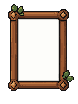
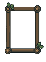
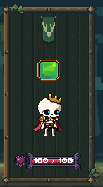

Forest · Stage 2 portrait frame
Review candidate · Art-only Unity scene · Stage 1 approved artwork preserved · No production integration or merge
13 native modules / 14 editable sources6 PixelLab generations · 15 totalBinary alpha · Point sampling
Carved wooden rails, centered corner pegs and connectors, two restrained ivy accents, a small antler pennant, and a quiet clipped timber interior. The existing Rattlebones, affinity gem and player health artwork are unchanged.
Actual Unity Game View
The portrait uses the current Forest reference rectangle, 135×258 pixels, in a 470×288 study. Stage 1 modules are reassembled at native scale to this extent. The original Stage 1 scene and every asset remain byte-identical. This is not a gameplay or phone safe-area test.
Native modules
Corner_TL15 × 15 · 6 colors
15x15 upright carved peg. Center (7,7), complete padded contour and consistent top-left light.LibreSprite source
Corner_TR15 × 15 · 6 colors
15x15 upright carved peg. Center (7,7), complete padded contour and consistent top-left light.LibreSprite source
Corner_BL15 × 15 · 6 colors
15x15 upright carved peg. Center (7,7), complete padded contour and consistent top-left light.LibreSprite source
Corner_BR15 × 15 · 6 colors
15x15 upright carved peg. Center (7,7), complete padded contour and consistent top-left light.LibreSprite source
Rail_Top16 × 9 · 5 colors
Straight repeatable rail. Native thickness 9, centerline 4; no texture stretching.LibreSprite source
Rail_Bottom16 × 9 · 4 colors
Straight repeatable rail. Native thickness 9, centerline 4; no texture stretching.LibreSprite source
Rail_Left9 × 16 · 5 colors
Straight repeatable rail. Native thickness 9, centerline 4; no texture stretching.LibreSprite source
Rail_Right9 × 16 · 4 colors
Straight repeatable rail. Native thickness 9, centerline 4; no texture stretching.LibreSprite source
Clamp7 × 7 · 4 colors
Quiet 7x7 square connector; its center (3,3) aligns to every rail centerline.LibreSprite source
Inset32 × 32 · 3 colors
Quiet 32x32 wooden backing, tiled beyond all interior edges then clipped with RectMask2D.LibreSprite source
Leaves_Upper20 × 19 · 4 colors
Source-derived ivy, isolated with full padding; limited to two restrained frame accents.LibreSprite source
Leaves_Lower19 × 19 · 4 colors
Source-derived ivy, isolated with full padding; limited to two restrained frame accents.LibreSprite source
AntlerPennant28 × 44 · 7 colors
28x44 native antler motif from the forest mockup; clear of the separate gem and face.LibreSprite source
Source and cleanup
Raw PixelLab · 96×128
16 opaque colors; unwanted white center.LibreSprite cleanup · 96×128
9 opaque colors; transparent center.
Split into native modules for Unity assembly.Actual Unity portrait crop
1×, including complete outward ivy.
Verification
Unity compilation and the explicit portrait test passed. Captures at 1×, 2× and 3× match exactly under nearest-neighbor comparison. Five odd/even frame sizes passed centered join checks; the undersized case hides safely. A tinted backing probe changed zero pixels outside the portrait mask. All 14 LibreSprite documents round-trip exactly, and 1,155 protected files remain unchanged.
Native crop sheet · Report · Pixel validation · Unity results · Stage 1
Stopped here for approval before Stage 3.